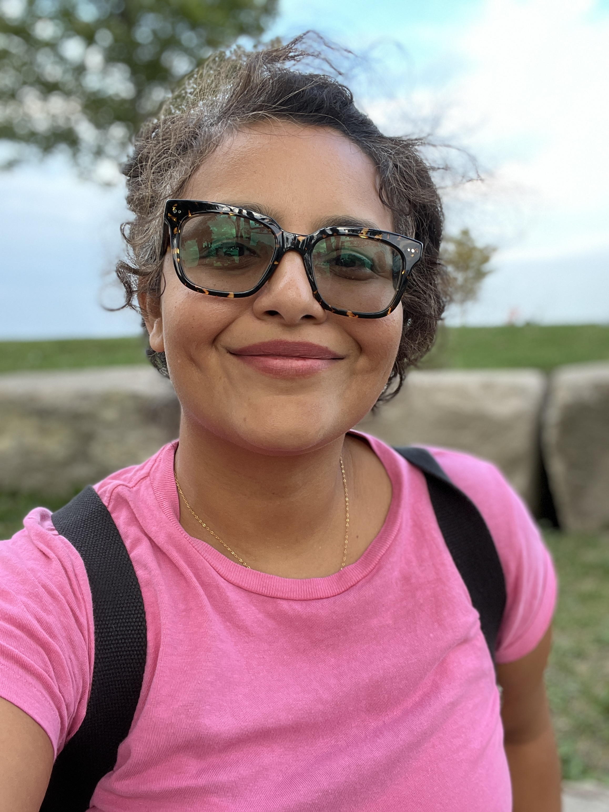

Hello!
I’m Umnia, a UX/UI student based in Chicago. I have always had an interest in understanding people's behavior and choices.
I am passionate about improving the experience and accessibility of digital products by data backed research and pleasing visual designs.